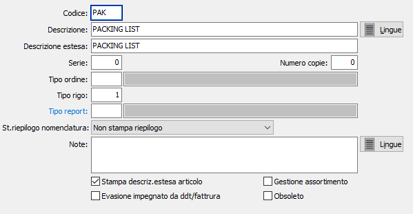

Causali packing list
Le causali packing vengono utilizzate al momento dell’emissione di un packing e determinano il tipo di documento da emettere. Le informazioni presenti in una causale di packing consentono di gestire correttamente gli assortimenti, la tipologia del documento stesso ecc.

CODICE: codice alfanumerico di 3 caratteri, a libera scelta dell'utente, per individuare la causale attiva. Sul campo sono attive le funzioni di ricerca (F9) sulla tabella stessa.
DESCRIZIONE: campo alfanumerico di 30 caratteri per inserire la descrizione della causale attiva. Questa descrizione viene stampata sui documenti se il programma di stampa lo prevede.
DESCRIZIONE ESTESA: campo alfanumerico di 60 caratteri per inserire la descrizione estera della causale attiva ad uso interno dell’utente. Questa descrizione non viene stampata sui documenti ma viene visualizzata nelle ricerche.
SERIE: campo numerico per inserire il numero di serie del documento. Ciascuna serie attiva una propria numerazione di documenti. E’ necessario, in fase di immissione del documento, per proporre automaticamente e correttamente il numero progressivo del documento acquisito dalla tabella protocolli.
NUMERO COPIE: Indicare il numero di copie da stampare, se zero saranno stampate le copie previste sull'anagrafica del cliente.
TIPO ORDINE: eventuale codice alfanumerico di 3 caratteri, presente nella tabella Tipologie Ordini, utile in caso di evasione packing. La tipologia determina quali righe evadere; se stiamo evadendo il documento dai Ddt o dalle fatture, in fase di selezione vengono selezionate solo le righe con tipo ordine uguale a quello della causale del documento che stiamo generando. Sul campo sono attive le funzioni di ricerca (F9) e manutenzione (CTRL+W) sulla tabella stessa.
TIPO RIGO: indica il tipo rigo da proporre in fase di emissione del packing. Sul campo sono attive le funzioni di ricerca (F9).
TIPO REPORT: consente di specificare un tipo di report specifico per i documenti che saranno emessi utilizzando questa causale. Sul campo sono attive le funzioni di ricerca (F9).
STAMPA RIEPILOGO NOMENCLATURA: Consente di stampare, in coda al documento, un riepilogo pesi/colli per nomenclatura combinata; è possibile non stampare il riepilogo, stamparlo solo per le nomenclature relative a beni, solo per le nomenclature relative a servizi o sempre.
NOTE: campo note a disposizione dell’utente.
STAMPA DESCRIZIONE ESTESA ARTICOLO: Indica se sul packing deve essere stampata la descrizione estesa dell'articolo, quando definita Fissa sul prodotto (casella con segno di spunta).
EVASIONE IMPEGNATO DA DDT/FATTURA: definisce se in fase di evasione ordine da packing non deve essere aggiornato il valore di impegnato da clienti (casella con segno di spunta), tale operazione sarà eseguita solo al momento dell'evasione del packing list da DDT o fattura.
GESTIONE ASSORTIMENTO: indica se sul packing list si intenda gestire gli assortimenti per la causale attiva. Questo campo è visibile se in configurazione si è abilitata la gestione degli assortimenti, spunta sul flag “Gestione assortimenti”.
OBSOLETO: flag attivabile dall’utente per inibire il possibile utilizzo dell’elemento di tabella in esame nelle successive transazioni.